遊びで植物を育てよう
2024/11/04
株元に近いキウイが生き残ったので収穫しました。

夏の日照りでほとんどのキウキが落ちましたが、株元に近いキウイは残っていたので収穫しました。
カチカチなので発酵させてから食べます。
【キウイTOP】
【果物TOP】
【園芸TOP】
2024/08/31
キウイの実が雨に打たれて落ちました。
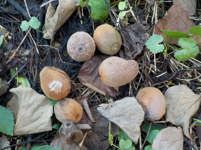
雨不足で弱り切ったところに台風で、実が大量に落ちました。
まあ、雨不足の時点でキウイの実がしぼんでいたので、ほとんど食べれないんだろうなとあきらめていたので、そんなにショックではないです。
木の葉っぱが少ないので、葉っぱがちょっとでも復活して欲しいです。
【キウイTOP】
【果物TOP】
【園芸TOP】
2024/07/06
枯れたと思ったキウイの挿し木から芽が出ました。
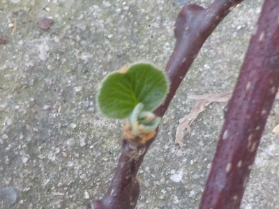
葉っぱが落ちて枯れ枝っぽくなっていたものから新芽が出ました。
キウイの枝には長期間養分が溜まっているんですね。枯れたと思っていたので、芽が出てびっくりしました。
捨てずに放置してて良かった。
【キウイTOP】
【果物TOP】
【園芸TOP】
2024/06/18
キウイの挿木で葉っぱが付いたものが2本になりました。
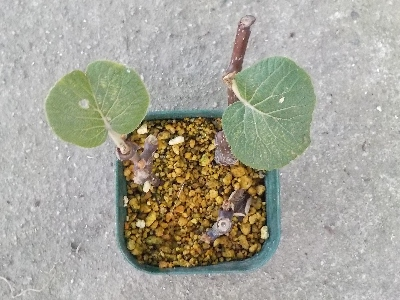
挿し木のキウイが残り2本になりました。
挿し木して期間が経っているので、その２本はもう根っこ出ているだろうと思い抜いてみたら、根っこはありませんでした。
そっと元に戻しましたが、今回は失敗になりそうです。
【キウイTOP】
【果物TOP】
【園芸TOP】
2024/06/09
キウイの挿し木は３本葉っぱが残っています。
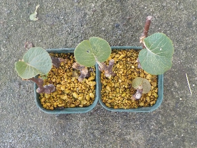
挿し木して4か月です。
葉っぱが残っているものは根っこが出ていて欲しいところです。
【キウイTOP】
【果物TOP】
【園芸TOP】
2024/05/15
キウイの雄花雌花が咲きました。
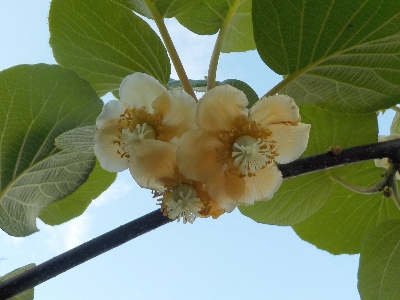
今まで雌木しか咲いていませんでした。
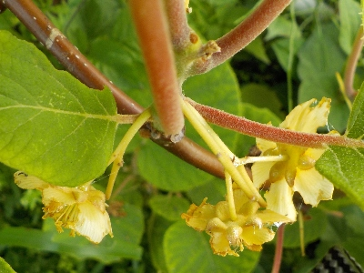
雄木が成長して花をつけました。
今年は実が沢山出来るかも。出来て欲しいな。ちゃんと管理すれば出来るんだろうな。
【キウイTOP】
【果物TOP】
【園芸TOP】
2024/04/27
今年も実生のキウイに花はなさそう。
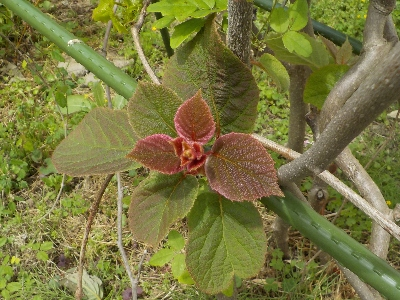
実生のキウイから赤い葉っぱが沢山出ていますが、いまのところツボミはありません。
大きくなりすぎて剪定しないと邪魔なくらいなので、花があってもおかしくないサイズですが、何故か花がありません。
実生5年じゃまだ駄目なのかな？
【キウイTOP】
【果物TOP】
【園芸TOP】
2024/02/11
キウイフルーツの挿し木をしました。
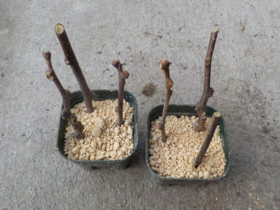
今まで我が家のキウイは小さかったですが、ちょっと太い枝が剪定出来たので挿し木しました。
ゴールド系は根が出にくいってネット情報を見たんですが、どうなるでしょうね。
【キウイTOP】
【果物TOP】
【園芸TOP】
2023/12/03
シワシワのキウイを収穫しました。
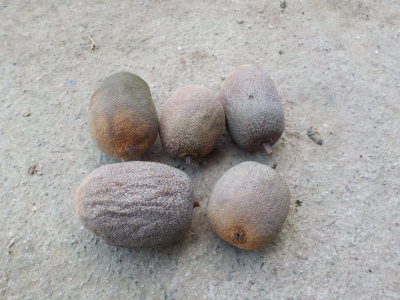
収獲し忘れていたら、キウイが小さくなってシワシワになっていました。
来年は収獲を忘れないように、スマホにメモしました。
【キウイTOP】
【果物TOP】
【園芸TOP】
2022/12/04
キウイを食べました。
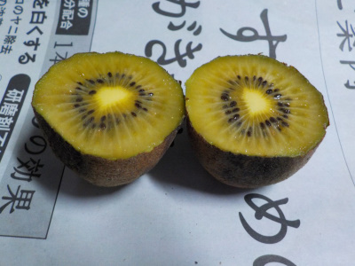
自宅で採れたゴールデンキウイです。
色がくすんでいますね。熟れすぎかもと恐る恐る食べました。
熟れすぎで発酵した感じはありませんでした。また、若くて酸っぱいってこともなかったです。
丁度いい熟れ加減ですが、味が薄い。食べれなくはないけど、あまり美味しくなかったです。
残念な結果でした。
【キウイTOP】
【果物TOP】
【園芸TOP】
2022/10/16
キウイはもうちょっとしたら収獲です。
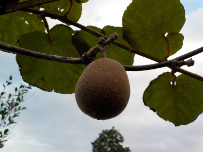
受粉させてないキウイですが、無事に収穫できそうです。
どこか近くの家にキウイがあるんでしょうね。
来年もどこかの木で受粉出来れば雄木を育てなくてもいいんだけどな。
【キウイTOP】
【果物TOP】
【園芸TOP】
2022/06/12
受粉出来てないはずですが、キウイが育っています。
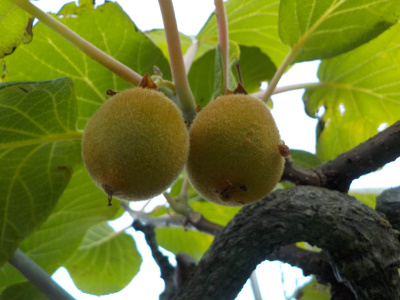
キウイの実がちょっとずつ大きくなっています。
このまま成長して欲しいな。
【キウイTOP】
【果物TOP】
【園芸TOP】
2022/05/22
キウイの花がそろそろ終わりそうです。
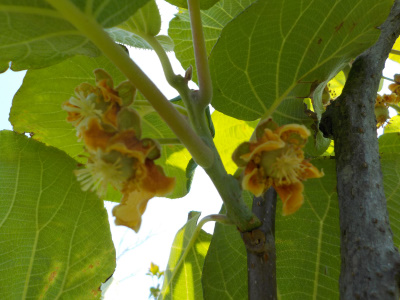
雄花が咲いていないので、実は出来ない予定です。
近所のどこからか花粉がやってこないかなー。
【キウイTOP】
【果物TOP】
【園芸TOP】
2022/04/24
キウイにツボミが出来ました。
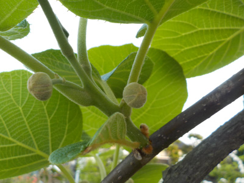
これは雌木のツボミです。雄木もあるんですが何故が弱ってしまし今年は開花しそうにありません。
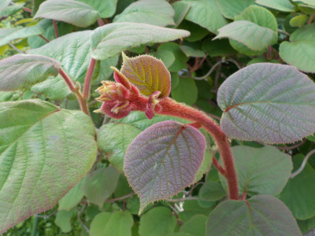
実生のキウイは何本もスクスク伸びてて、上の雌木より大きくなって茂っているんですがまだツボミはありません。
この中の1本がオスで受粉に使えるっといいんだけど。今年は無理でも来年は花が咲いて欲しいです。
【キウイTOP】
【果物TOP】
【園芸TOP】
2021/12/11
キウイを合掌式仕立てで育ててみようと思います。
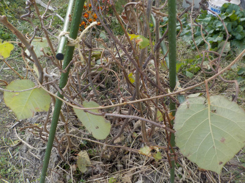
果樹棚を作るのは大掛かりで嫌だと思ったので、合掌仕立てにしました。
キュウリを育てるみたいな感じです。
あんまりお金掛からないし、簡単なのはコレじゃないかと思いました。
このキウイは実生なのでちゃんと実が出来るか、花が咲くかもわかりませんが、試してみようと思います。
【キウイTOP】
【果物TOP】
【園芸TOP】
2021/08/08
新しい実生キウイをほぼ枯らしてしまいました。
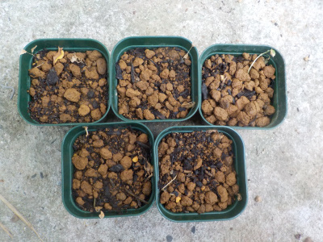
ペットボトルから出したら枯れました。
環境が合わなかったんですね。あーあ。
キウイの苗は強いって思っていて、油断していました。
【キウイTOP】
【果物TOP】
【園芸TOP】
2021/07/31
キウイの苗を20本ポットに植えました。
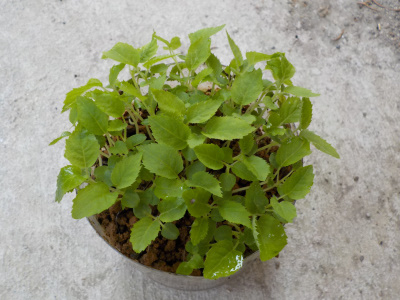
苗が大きくなったので、ポットに植え替えしました。

たぶん夏は成長しないし、寒くなったら葉っぱを落とすので今年はあまり成長しないと思います。
なので1ポットに4本植えました。
キウイは発芽率が高いので、ペットボトルに5個くらい蒔いてそのまま育てれば植え替えの必要がないので楽そうです。
次回やることがあったらそうします。
【キウイTOP】
【果物TOP】
【園芸TOP】
2021/06/20
キウイの発芽は簡単ですね。
2021/05/23
ゴールデンキウイの種蒔きをしました。
2021/04/17
鉢植えのキウイを地植えにしました。
2020/08/29
7月に地植えにしたキウイが枯れました。
2020/07/18
キウイの水耕栽培に限界を感じました。
2020/07/12
実生のキウイは葉っぱが大きいです。
2020/03/08
実生のキウイを地植えにしました。
2020/02/23
室内水耕栽培のキウイの一部を屋外に移動しました。
2020/02/15
冬の水耕栽培のキウイです。
2019/10/27
キウイのポットを3個追加しました。
【キウイTOP】
【果物TOP】
【園芸TOP】
2019/10/20
水耕栽培キウイ3つをポット苗にしました。
2019/10/09
キウイの水耕栽培を１本にしました。
2019/07/28
キウイの苗が高温で痛められました。
2019/07/28
キウイの水耕栽培をしています。
2019/07/06
キウイの植え直しをしました。
2019/05/19
キウイのタッパー栽培はやめました。
2019/04/03
キウイの種から根が出てきました。
2019/03/10
キウイの種を蒔きました。
2016/07/03
キウイにキノコかな？
2014/05/31
キウイの実が出来ていました。
【キウイTOP】
【果物TOP】
【園芸TOP】
キウイを沢山育てて沢山食べたい。
【おいしいものを食べよう。】【たくさん寝よう。】
【ソロ活をしよう!】【季節感のあることをしよう。】【動画視聴はほどほどに。】【当サイトの全てのコンテンツは無断転載禁止です。】